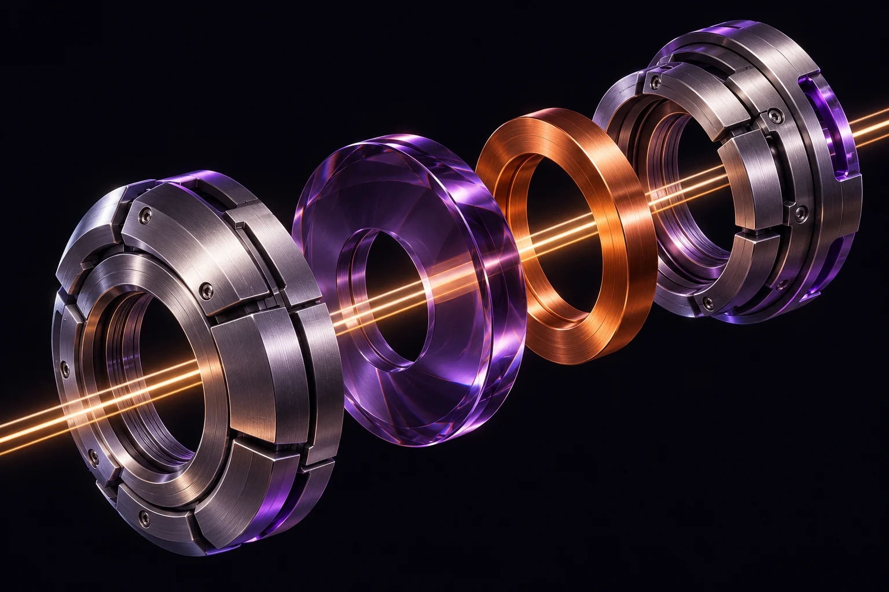
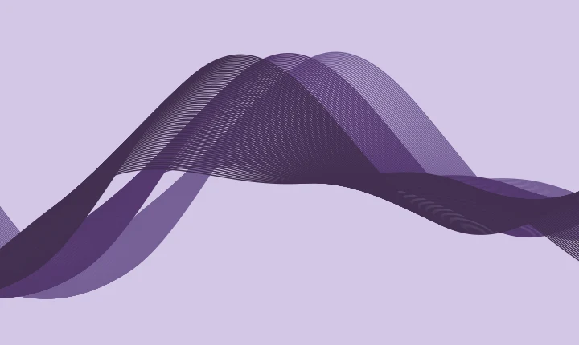
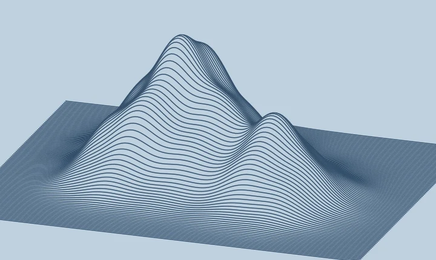

Библиотека для Dart
rpc_dart
Описываешь контракт один раз. Тот же вызов работает между изолятами в приложении и между браузером и сервером. Меняется только транспорт.

Архитектор ПО
Пишу на Dart. Проектирую протоколы связи, инструменты для модульных приложений и синхронизацию заметок в Obsidian.
Библиотека для Dart
Описываешь контракт один раз. Тот же вызов работает между изолятами в приложении и между браузером и сервером. Меняется только транспорт.

Архитектура приложений
Модули, плагины и агенты говорят на одном языке. У каждого состояния есть владелец, а журнал помогает проследить цепочку событий до исходной команды.

Сервис для Obsidian
Редактируешь одну заметку на телефоне и ноутбуке. Движок объединяет правки посимвольно, а содержимое шифруется ещё до отправки на сервер.
Вынес транспорты в отдельные пакеты. Можно подключить к контракту HTTP, WebSocket или WebAssembly и выбрать нужный вид обмена сообщениями.
Пакеты на pub.devВ просмотрщике можно раскрыть цепочку событий и воспроизвести её по шагам. Так видно, какая команда запустила изменение и какой модуль на него отреагировал.
Просмотрщик журналаОпубликовал движок Rhyolite Sync и сервер для самостоятельного развёртывания. Можно хранить зашифрованные заметки в своей инфраструктуре и подключать к ней устройства через плагин Obsidian.
Инструкция по развёртыванию